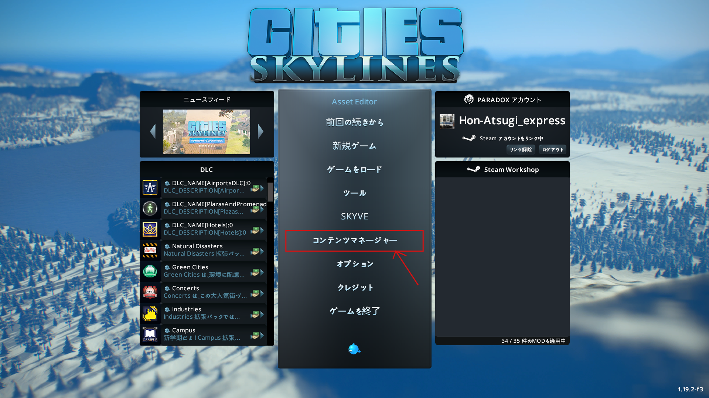
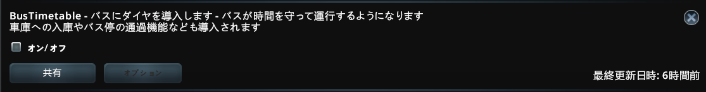
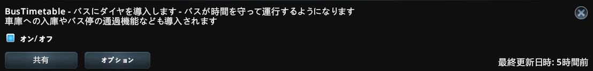
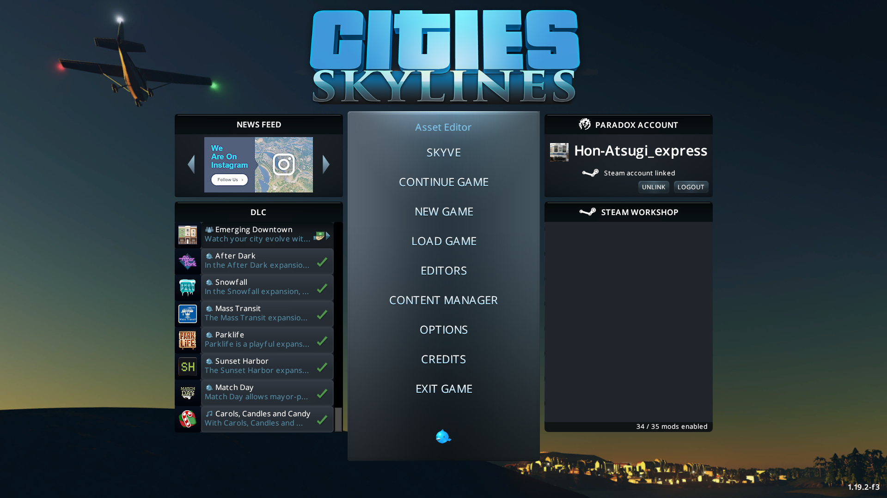
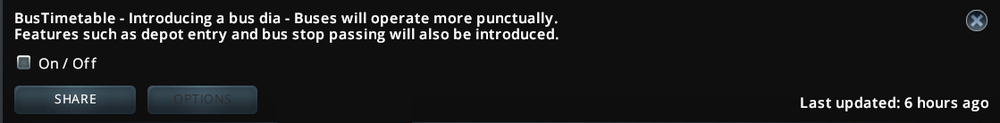
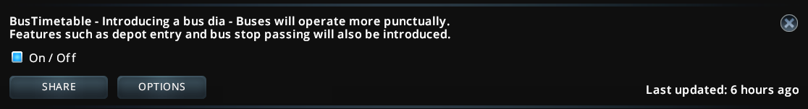

こんにちは、この記事では Bus Timetable の導入方法を説明します
普段からMODを使ってCities Skylinesをしている方は既に入れていると思いますが
このMODの動作には「Harmony」が必須です
Steamワークショップ: Harmony 2.2.2-0 (Mod Dependency)
こちらのMODをサブスクライブしたら、準備完了です。
準備が出来たら、Cities Skylines を起動します。
起動が完了すると、メニュー画面が表示されます。
メニュー画面から「コンテンツマネージャー」をクリックしてください。

検索欄に「BusTimetable」と入力するか、「BusTimetable」というMODまでスクロールします。

そしたらMODをオンにします、これでこのMODの使用を開始できます！

Hello, in this article I will explain how to install Bus Timetable.
Those who regularly use mods to play Cities Skylines probably already have it installed, but this mod
requires "Harmony" to work.
Steam Workshop: Harmony 2.2.2-0 (Mod Dependency)
Once you subscribe to this mod, you're ready to go.
When you're ready, launch Cities Skylines.
Once launch is complete, the menu screen will appear.
Click "Content Manager" from the menu screen.

Enter "BusTimetable" in the search field or scroll down to the mod called "BusTimetable".

Then turn on the mod and you're ready to go!
